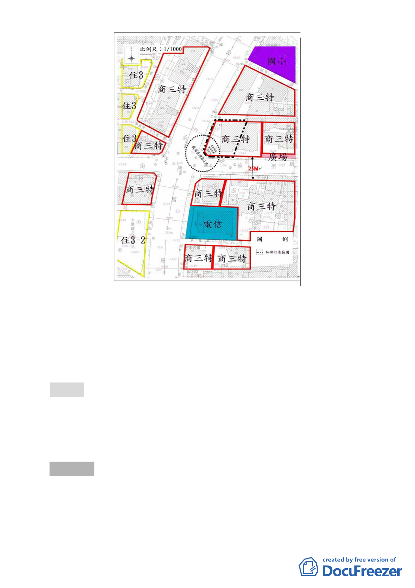

四、本案係市府 100 年 11 月 24 日府都規字第 10037069303 號
函送到會，100 年 11 月 25 日起公開展覽 30 天。
五、公民或團體所提意見：無。
六、辦理單位：臺北市政府。
七、法令依據：都市計畫法第 27 條第 1 項第 4 款。
決議：本案除計畫書第 7 頁叁、修訂計畫內容之文字修正為「本
市大同區 40 公尺寬承德路三段及 25 公尺寬庫倫街交叉口
東北側之截角長度為 6 公尺（詳圖三）。」外，餘依市府所
送計畫書內容通過。
叁、散會（10：30）
- 25 -